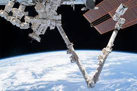

Canadarm

The Canadarm is an arm used in the space shuttle project and in the constrution of the International Space Station, more commonly known as the ISS. The Canadarm was pivotal to the development of new oppurtunities in STEM careers, leading to more jobs relating to space and technology and researd from the ISS. The Canadarm is shown bellow.